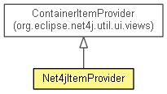

org.eclipse.net4j.ui
Class Net4jItemProvider
java.lang.Object
 org.eclipse.net4j.util.ui.StructuredContentProvider<INPUT>
org.eclipse.net4j.util.ui.views.ItemProvider<CONTAINER>
org.eclipse.net4j.util.ui.views.ContainerItemProvider<IContainer<Object>>
org.eclipse.net4j.ui.Net4jItemProvider
org.eclipse.net4j.util.ui.StructuredContentProvider<INPUT>
org.eclipse.net4j.util.ui.views.ItemProvider<CONTAINER>
org.eclipse.net4j.util.ui.views.ContainerItemProvider<IContainer<Object>>
org.eclipse.net4j.ui.Net4jItemProvider
- All Implemented Interfaces:
- EventListener, org.eclipse.jface.viewers.IBaseLabelProvider, org.eclipse.jface.viewers.IColorProvider, org.eclipse.jface.viewers.IContentProvider, org.eclipse.jface.viewers.IFontProvider, org.eclipse.jface.viewers.ILabelProvider, org.eclipse.jface.viewers.IStructuredContentProvider, org.eclipse.jface.viewers.ITreeContentProvider, IListener
- public class Net4jItemProvider
- extends ContainerItemProvider<IContainer<Object>>

- Since:
- 4.1
|
Method Summary |
protected void |
fillContextMenu(org.eclipse.jface.action.IMenuManager manager,
org.eclipse.jface.viewers.ITreeSelection selection)
|
org.eclipse.swt.graphics.Image |
getImage(Object obj)
|
| Methods inherited from class org.eclipse.net4j.util.ui.views.ContainerItemProvider |
addNode, connectInput, createContaineNode, createLeafNode, createNode, disconnectInput, dispose, elementAdded, elementRemoved, executeRunnable, filterRootElement, getChildren, getErrorText, getFont, getForeground, getNode, getNodes, getParent, getRoot, getRootElementFilter, getSlowText, handleInactiveElement, isSlow, removeNode |
| Methods inherited from class org.eclipse.net4j.util.ui.views.ItemProvider |
addListener, fireLabelProviderChanged, fireLabelProviderChanged, fireLabelProviderChanged, getBackground, getElements, getListeners, getText, hasChildren, isLabelProperty, removeListener |
| Methods inherited from class org.eclipse.net4j.util.ui.StructuredContentProvider |
getDisplay, getInput, getItalicFont, getViewer, inputChanged, notifyEvent, refreshElement, refreshSynced, refreshViewer, revealElement, selectElement, updateLabels |
| Methods inherited from class java.lang.Object |
clone, equals, finalize, getClass, hashCode, notify, notifyAll, toString, wait, wait, wait |
| Methods inherited from interface org.eclipse.jface.viewers.IContentProvider |
inputChanged |
Net4jItemProvider
public Net4jItemProvider()
Net4jItemProvider
public Net4jItemProvider(IElementFilter rootElementFilter)
getImage
public org.eclipse.swt.graphics.Image getImage(Object obj)
- Specified by:
getImage in interface org.eclipse.jface.viewers.ILabelProvider- Overrides:
getImage in class ContainerItemProvider<IContainer<Object>>
fillContextMenu
protected void fillContextMenu(org.eclipse.jface.action.IMenuManager manager,
org.eclipse.jface.viewers.ITreeSelection selection)
- Overrides:
fillContextMenu in class ContainerItemProvider<IContainer<Object>>
Copyright (c) 2004 - 2012 Eike Stepper (Berlin, Germany) and others.